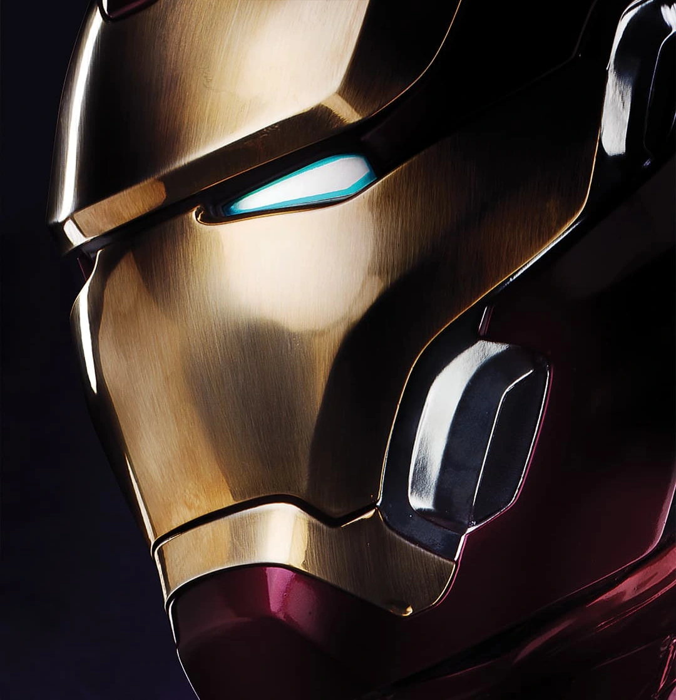
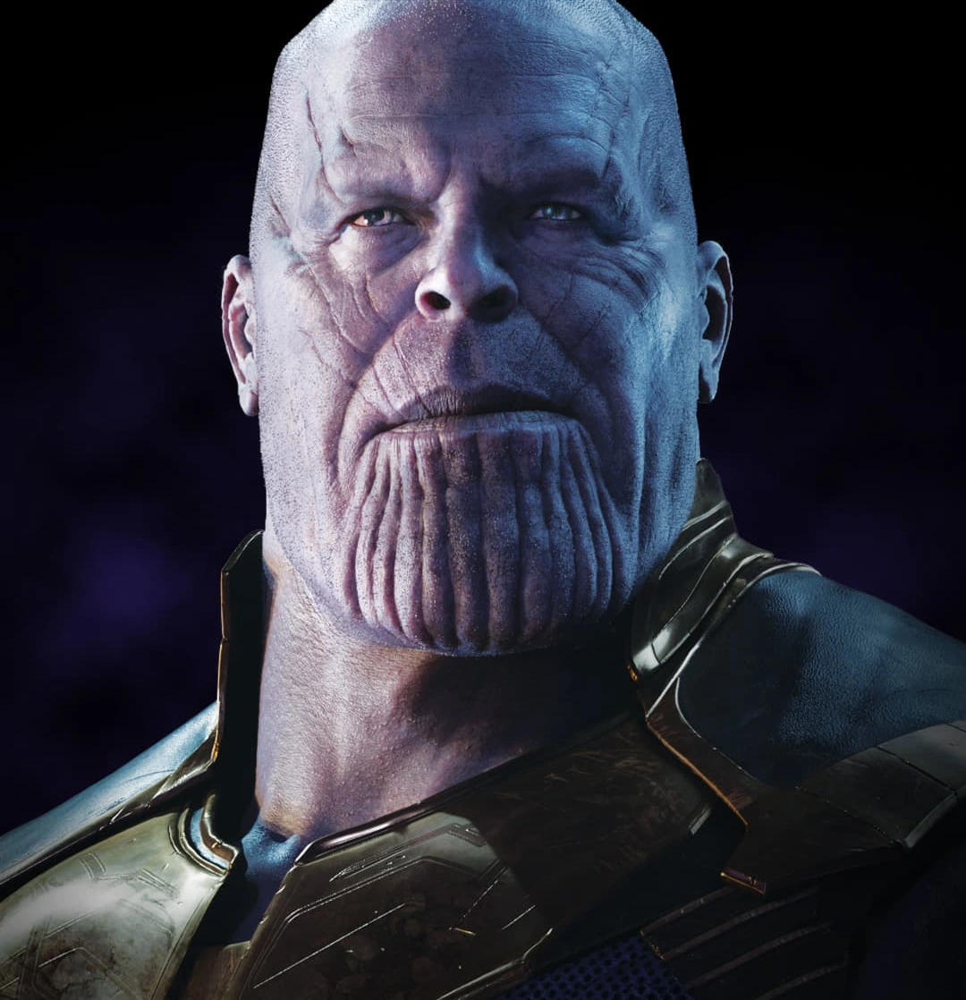
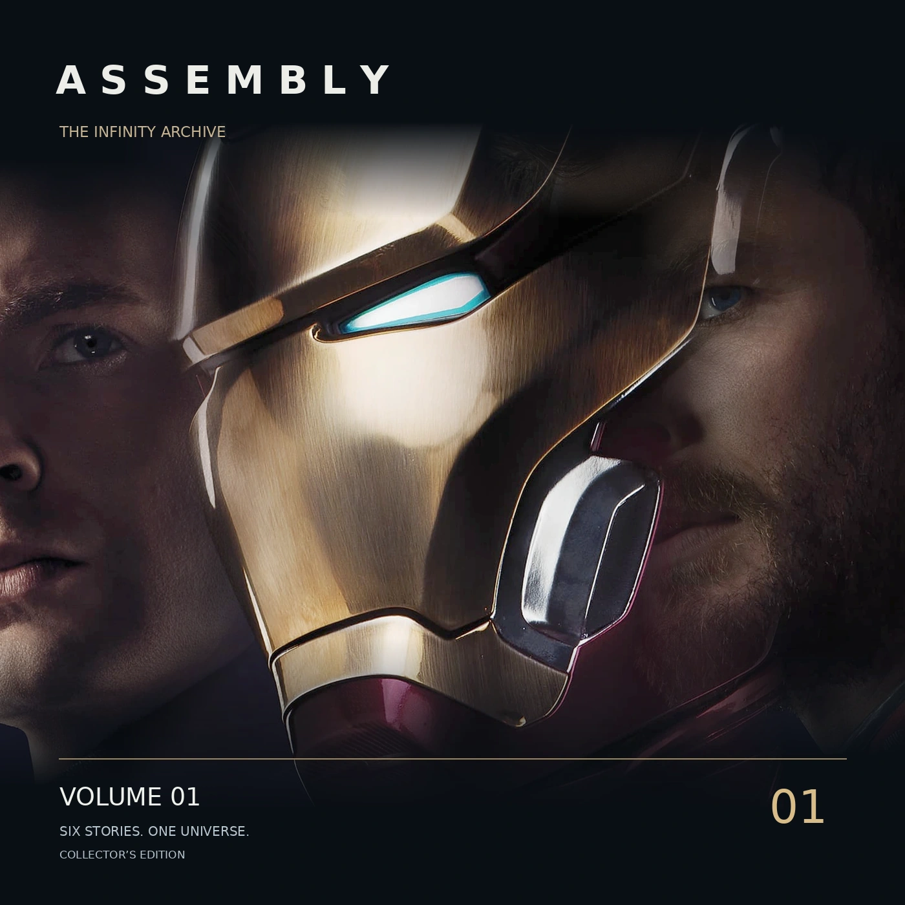
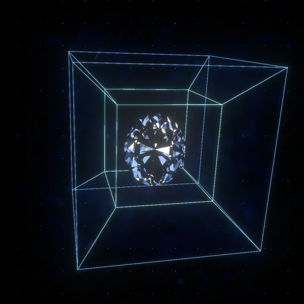

SIX FILMS / ONE UNIVERSE
让不可能，
在光里慢慢发生。
金属的温度，晶体的深处，流动的倒影，归来的尘埃。
六段自动播放的材质影像，与那些不曾熄灭的热爱。

01 / 零界工坊
精密线圈层层苏醒，一颗核心重新亮起。

02 / 六界之间
六颗光学晶体，六段世界与时间的倒影。
03 / 蓝色奇点
液体自主呼吸，把他的倒影折入宇宙。
04 / 尘埃之后
消散，停留，归来。每一颗尘埃都有归处。

05 / 集结典藏
盒盖轻启，唱片旋转，郑重珍藏一段时光。

06 / 宇宙宝石
六种奇点，宇宙的六个侧面。